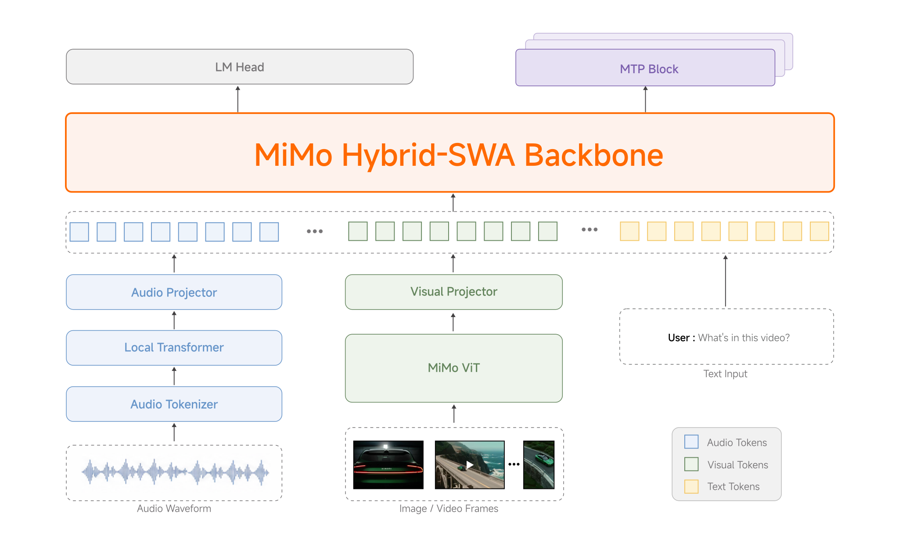

MiMo-V2.5

---
1. 问题与动机
V2-Flash 和 V2-Pro 展示了 MoE + MTP + Hybrid SWA + MOPD 的技术栈威力，但：
- 闭源 API：研究社区无法复现训练过程
- 缺少原生多模态：V2-Flash/Pro 主要是 text-focused
- 成本门槛：1M context 的 multiplier 计费阻碍长程 agent 应用
V2.5 的目标：开源 + 多模态 + 无 multiplier。
---
2. 核心方法
2.1 模型规格
| 特性 | MiMo-V2.5-Base | MiMo-V2.5 |
|---|---|---|
| Total Params | 310B | 310B |
| Active Params | 15B | 15B |
| Architecture | Sparse MoE | Sparse MoE |
| Context | 256K | 1M |
| Precision | FP8 (E4M3) Mixed | FP8 (E4M3) Mixed |
| Modalities | Text + Visual + Audio | Text + Visual + Audio |
Backbone 继承：MiMo-V2.5 的语言 backbone 继承自 V2-Flash 的 Hybrid SWA 架构（5:1 ratio，128-token window），加上专用 visual 和 audio encoders（均为自研预训练）。
2.2 五阶段训练流程
codeStage 1: Text Pretraining └── Diverse corpora → LLM backbone Stage 2: Projector Warmup └── Align audio/visual projectors with LLM Stage 3: Multimodal Pretraining └── High-quality cross-modal data at scale Stage 4: SFT + Agentic Post-Training └── Progressively extend context: 32K → 256K → 1M Stage 5: RL + MOPD └── Further strengthen perception, reasoning, agentic
MOPD（Multi-Teacher On-Policy Distillation）：V2-Flash 提出的 multi-domain RL teacher 合并方案，在 V2.5 中继续使用。
2.3 统一多模态感知
MiMo-V2.5 原生支持：
- 图像理解（OCR、图表、文档）
- 视频理解（带音频的原生 audio-video joint input）
- 音频理解（环境音分类、多说话人分离、长音频摘要）
- 文本推理
---
3. 实验结果
3.1 Agentic Benchmarks
| Benchmark | Task | MiMo-V2.5 | MiMo-V2-Pro | Kimi K2.6 | Claude Opus 4.6 | Gemini 3.1 Pro |
|---|---|---|---|---|---|---|
| SWE-Bench Verified | Coding Agent | 71.8 | 71.5 | 77.1 | 67.8 | - |
| MiMo Coding Bench | Everyday Coding | 62.3 | 57.8 | 62.3 | 70.8 | 57.8 |
| Claw-Eval Text | Daily Agent | 65.8 | 57.1 | 66.7 | 65.4 | 68.5 |
| Terminal-Bench 2.0 | Terminal Agent | 56.1 | 55.0 | 58.6 | 57.3 | 54.2 |
3.2 Image & Video Understanding
| Benchmark | Task | MiMo-V2.5 | MiMo-V2-Omni | Claude Opus 4.6 | Gemini 3 Pro |
|---|---|---|---|---|---|
| MMMU-Pro | Multimodal Reasoning | 88.5 | 83.3 | 86.4 | 83.3 |
| CharXiv RQ | Chart Understanding | 77.9 | 76.8 | 73.9 | 81.0 |
| HR-Bench (4k) | Image Understanding | 87.2 | 86.7 | - | 89.0 |
| Video-MME | Video QA | 83.5 | 80.5 | - | 84.2 |
| VideoHolmes | Video Reasoning | 23.8 | 15.8 | 24.8 | 25.7 |
| Claw-Eval Multimodal | Multimodal Agent | 87.7 | 85.3 | - | 88.4 |
亮点：
- MMMU-Pro 88.5，超越 Claude Opus 4.6（86.4）和 V2-Omni（83.3）
- Video-MME 83.5，超越 V2-Omni（80.5）
- Claw-Eval Multimodal 87.7，紧追 Gemini 3 Pro（88.4）
---
4. 开源生态
4.1 Hugging Face 资源
| Model | Download |
|---|---|
| MiMo-V2.5-Base | HF: XiaomiMiMo/MiMo-V2.5-Base |
| MiMo-V2.5 | HF: XiaomiMiMo/MiMo-V2.5 |
包含：权重、tokenizer、完整 model card。
4.2 Token Plan 定价
| Model | Multiplier | 说明 |
|---|---|---|
| MiMo-V2.5 | 1x | 无 multiplier |
| MiMo-V2.5-Pro | 2x | 更强能力 |
关键改变：1M context 不额外收费，降低长程 agent 应用的成本感知门槛。
---
5. 与 V2-Flash / V2-Pro / V2-Omni 的关系
codeMiMo-7B (Dense, reasoning base) ↓ MiMo-VL-7B (加入视觉) ↓ MiMo-V2-Flash (MoE 309B/15B, Hybrid SWA 5:1, MTP, MOPD) ↓ ↓ ↓ V2-Pro V2-Omni V2.5 (42B) (Omnimodal) (开源) ↓ V2.5-Pro
V2.5 的独特价值：
- 开源：首个完整开源的 MiMo V2 系列多模态 agent 模型
- 多模态：整合 V2-Omni 的全模态能力到开源生态
- 无 multiplier：1M context 的实际可用性
---
6. 对研究的启发
---
7. 与 V2.5-Pro 的关系
| 特性 | V2.5 | V2.5-Pro |
|---|---|---|
| Active Params | 15B | 42B |
| 开源 | ✅ 完全开源 | ❌ 闭源 |
| Multimodal | ✅ | ✅ |
| Context | 1M | 1M |
| Target | 社区 / 研究 | 复杂 agentic tasks |
V2.5-Pro 是 V2.5 的"闭源 Pro 版本"，对应 V2-Flash → V2-Pro 的关系。
---
相关资料
- 博客原文：MiMo-V2.5 - Xiaomi Blog
- MiMo-V2-Flash：MiMo-V2-Flash
- MiMo-V2-Pro：MiMo-V2-Pro
- MiMo-V2-Omni：MiMo-V2-Omni
- MiMo Series Insight：MiMo-Series